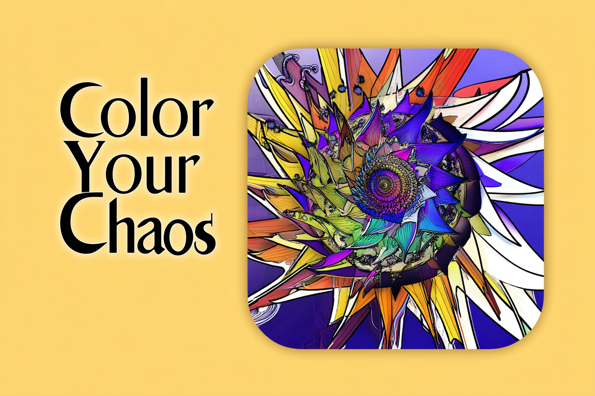

Welcome to Color Your Chaos
Color Your Chaos is a creative and supportive space dedicated to helping you navigate life's unpredictable moments with clarity and resilience. By exploring the vibrant spectrum of your experiences—even the messy ones—we help you associate colors with different forms of chaos to gain new perspectives, process emotions, and develop healthy, empowering coping strategies. Together, we’ll transform confusion into color, and chaos into a canvas for growth.
Join us on this journey of self-discovery and healing, where we embrace the beauty of life's messiness and find strength in our shared experiences.
Explore Our App
Click below to explore our app and bring order to your chaos! It's still a work in progress, but it's just the beginning of something great!
Finding Relief: Helpful Ways to Tame the Chaos
- Start Small: Focus on one manageable area...
- Establish Routines: Create predictability...
- Prioritize and Delegate: Focus on what truly matters...
- Practice Mindfulness: Use techniques to quiet your mind.
- Digital Declutter: Organize your online spaces...
- Seek Support: Don't hesitate to ask for help.
- Embrace Imperfection: Progress over perfection.
- Regularly Reassess: Adapt your strategies...
Ways to Calm the Chaos
- Declutter One Focused Area: Choose a small spot...
- Engage in a Mindful Morning Routine: Take 10 to 15 minutes each morning...
- Limit Digital Distractions: Set times to check email...
- Practice Gratitude: End each day by writing down three things...
- Engage in Quick Physical Activity: Move your body for a few minutes...
- Use a Timer for Focused Work: Experiment with different work/break intervals.
- Engage in a Mindful Evening Routine: Wind down with something screen-free...
- Engage in a Comprehensive Mind Dump: Empty your thoughts...
- Implement Time Blocking: Plan your day with intentional work blocks...
- Practice Intentional Breathing Exercises: Try structured breathing like box breathing.
Helpful Resources
- Books: Explore books on mindfulness, organization, and mental health.
- Apps: Use apps like Calm, Headspace, or Todoist to manage chaos.
- Support Groups: Join local or online communities for shared experiences.
- Professional Help: Seek guidance from therapists or life coaches.
- Workshops: Attend workshops on time management or stress reduction.
- Podcasts: Listen to podcasts on personal growth and mental clarity.
Chaos-Inspired Quotes
"Out of chaos comes order" — Friedrich Nietzsche
"Healing doesn’t mean the damage never existed..." — Akshay Dubey
"In the midst of chaos, there is also opportunity" — Sun Tzu
"The best way out is always through" — Robert Frost
"When things fall apart..." — Ursula K. Le Guin
"Chaos is the score..." — Henry Miller
"Sometimes our lives..." — Unknown
"Order is the dream of reason..." — Edward Abbey
"In all chaos there is a cosmos..." — Carl Jung
Join Us on X
Follow Us for daily tips!
Share Your Story [&] Contact Us
We believe in the power of shared experiences. If you have a story about how you found clarity in chaos, we’d love to hear it!
If you have any questions, suggestions, or would like to share your story, feel free to reach out to us!
Email us at: cavinkrenik5@icloud.com